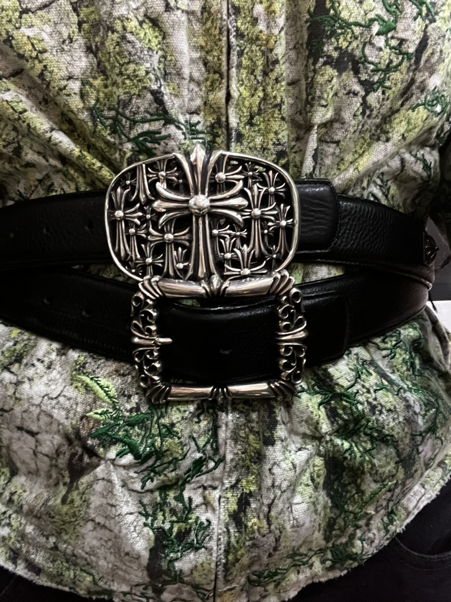
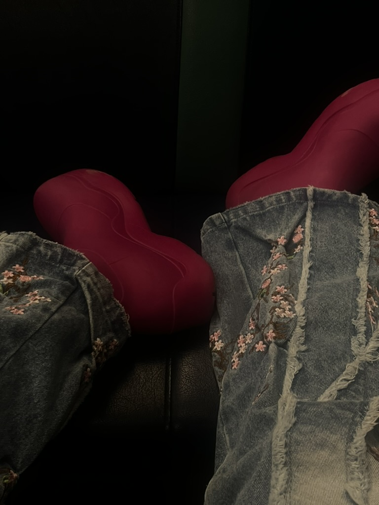

About Me
My name is Jessica, and I am from NYC. I am 21 years old. My interests revolve around the sports and fashion world. I love thrifting, putting outfits together and dressing up! I also listen to a variety of music and love trying new kinds of food, reading fashion blogs and also learning about crypto currencies. My favorite sport is Basketball, and my career goal is to become a stylist for athletes.
I am currently in my fourth year at Northeastern University, where I am pursuing a degree in Computer Science & Business Administration with a concentration in Brand Management as well as a minor in Global Fashion Studies. My academic journey has been both exciting and rewarding, allowing me to explore different fields. Alongside my studies, I have participated in multiple internships and co-op programs that have given me valuable industry experience and insight. Throughout these opportunities, I have learned a lot about my passions, and they have helped shape my career aspirations.
In the summer of my sophomore year, I was IT intern at a cosmetics company called tarte. I realized that I do not like the corporate type of environment and work structure. In my Third year, I did my co-op at a Fashion Public Relations Firm in NYC
I also love cars! Some of my favorites include variations of Dodge sports cars, like the Challenger, and recently, the Tesla Cybertruck. I realize that I am drawn to cars with unorthodox silhouettes.

Gallery
Some images of photos I've taken of my clothes and shoes!
 